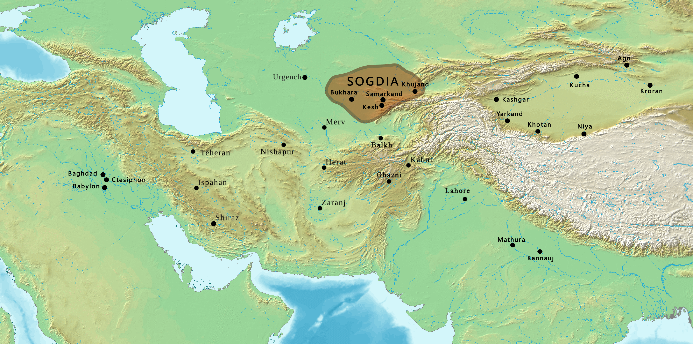
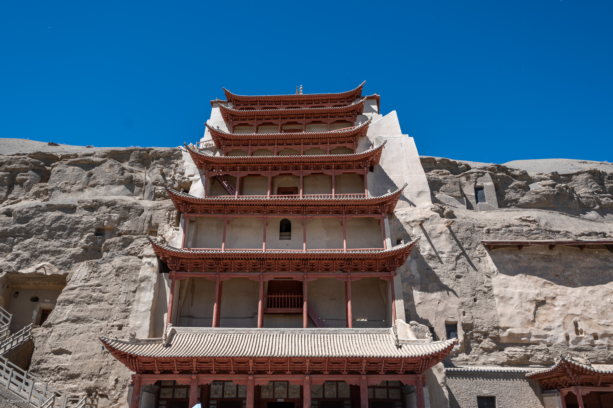

The Silk Road
Creating the Afro-Eurasian World
World History — Standalone Lecture
The Silk Road Changed the World
Not because one traveler went far.
But because millions of small trips created a permanent web.
Goods moved. Ideas moved. Diseases moved. Power moved.
A network can reshape history without anyone “planning” it.
What Was the “Silk Road”?
- Not one road — a network of routes
- Overland corridors linking Han China to Central Asia and beyond
- Trade moved in relay stages (goods changed hands many times)
- It worked through hubs (oasis cities, markets, border towns)
Think “web,” not “highway.”
Map the System
What to notice
- Multiple routes (desert rims, mountain passes)
- Hubs where caravans rest, trade, and translate
- Routes shift when politics or climate changes
A network survives because it has backups.

A Polycentric World
Major Power Zones
- Han in East Asia
- Kushan in Central/South Asia
- Parthia in Iran/Mesopotamia
- Rome in the Mediterranean
Key Point
- No single “world empire” runs everything
- Exchange happens between multiple centers
- Middle regions become powerful by connecting others
The Silk Road creates a world of connected centers — not one boss.
Geography Sets the Price
- Deserts, mountains, extreme temperatures
- Travel is slow and dangerous
- Only high-value goods usually “make economic sense”
- Risk encourages hubs and protection systems
Distance turns geography into an economic filter.

Oasis Cities = World Connectors
Why they matter
- Water + storage + markets
- Places to repair, rest, and hire guides
- Translation and cultural mixing
- States tax and protect these nodes
A network runs on stops, not just routes.
IMAGE PLACEHOLDER
Put an image in: silkroad/oasis_city.jpg
Alt text/search:
"Silk Road oasis city caravan market scene historical illustration"
"Dunhuang oasis city gate desert trade route"
Suggested sources: museums, encyclopedias, Wikimedia Commons
Put an image in: silkroad/oasis_city.jpg
Alt text/search:
"Silk Road oasis city caravan market scene historical illustration"
"Dunhuang oasis city gate desert trade route"
Suggested sources: museums, encyclopedias, Wikimedia Commons
Caravanserai & Trust Infrastructure
- Roadside inns for caravans (food, water, security)
- Reduce risk and lower transaction costs
- Create predictable rhythms of travel
- Help turn dangerous movement into a repeatable system
Trade expands when trust becomes routine.
Who Actually Ran It?
Merchant Connectors
- Sogdians as famous intermediaries
- Diaspora networks = trust across borders
- Multi-lingual, adaptable, mobile
States Still Matter
- Protection, taxation, permits, diplomacy
- Trade rises when states stabilize corridors
- Trade collapses when war disrupts hubs
Central Asia: The Heart of the Network
- Not a “blank space” — a world of cities and trade specialists
- Middle regions broker exchange between bigger empires
- Culture here is often hybrid
Central Asia is the connector, not the “in-between.”

What Traveled the Silk Road
East → West
- Silk
- Lacquerware
- Metals/finished goods
- (Later) paper, porcelain
West → East
- Glassware
- Gems, gold, silver
- Ferghana horses
- Wool textiles
Foods
- Grapes, wine culture
- Walnuts, pomegranates
- Sesame, coriander
- New tastes = new habits
But the most world-changing “cargo” was ideas.
Ideas on the Move
Case Study: Buddhism
- Moves through merchants, monks, and hubs
- Spreads by translation and patronage
- Creates new art, rituals, institutions
- Shows how trade routes become idea routes
World systems spread meaning as well as merchandise.

Power Makes Routes “Work”
- Empires stabilize corridors (or disrupt them)
- Forts, garrisons, taxation, protection
- Diplomacy: gifts, hostages, alliances, marriages
- Trade often grows out of security needs
World-history punchline: the Silk Road is not “trade vs. politics.” It’s trade through politics.
The Dark Side: Disease
- Networks move pathogens too
- Urban hubs can amplify outbreaks
- Later: plague spreads across Eurasia (especially under Mongol-era connectivity)
- Interdependence includes vulnerability
A connected world shares risks.
IMAGE PLACEHOLDER
Put an image in: silkroad/black_death_map.jpg
Alt text/search:
"Black Death spread map Eurasia trade routes"
"plague transmission Silk Road historical map"
Suggested sources: university sites, textbooks, reputable museums
Put an image in: silkroad/black_death_map.jpg
Alt text/search:
"Black Death spread map Eurasia trade routes"
"plague transmission Silk Road historical map"
Suggested sources: university sites, textbooks, reputable museums
Technology & Knowledge Transfer
What moves
- Paper (later spreads west)
- Metallurgy techniques
- Art styles and iconography
- Astronomy, medicine, mathematics
Why it matters
- Ideas can outlast empires
- Knowledge reshapes states and economies
- Shared “toolkits” create long-term convergence
A Famous Misunderstanding
Students often ask:
Where is Marco Polo?
He’s not the beginning of the story.
Was This the “Columbian Exchange” of the Ancient World?
Similarities
- Moves crops, ideas, and diseases
- Creates new tastes and habits
- Builds interdependence
Key Differences
- Silk Road is slow and mostly overland
- No sudden “world merge” moment
- More relay networks; less conquest-driven mass migration
Better analogy: a long, gradual “wiring together” of Afro-Eurasia.
📝 Check Your Understanding
Which is the best definition of the Silk Road?
- A single road used mainly by Chinese merchants traveling to Rome.
- A government-run highway built to export silk as a national project.
- A network of routes and hubs where goods moved in relay stages across Afro-Eurasia.
- A late medieval European exploration route led by Marco Polo.
So… What Changed?
The Silk Road helped create a world where major regions could no longer develop in isolation.
- Trade links create interdependence
- Hubs become cultural mixing zones
- Ideas travel (religion, art, knowledge)
- Risks travel too (war shocks, disease)
The Silk Road Legacy
It didn’t create “globalization” overnight.
It created the habit of long-distance connection.
After the Silk Road, the world is harder to keep separate.
Next time (when we’re ready): why Mongol-era connectivity supercharges the system.